HUN_PLAKAT_2025_0012025-04-06
Magyarország Kormánya (Miniszterelnöki Kabinetiroda)
Állami hirdetés (VOKS 2025)
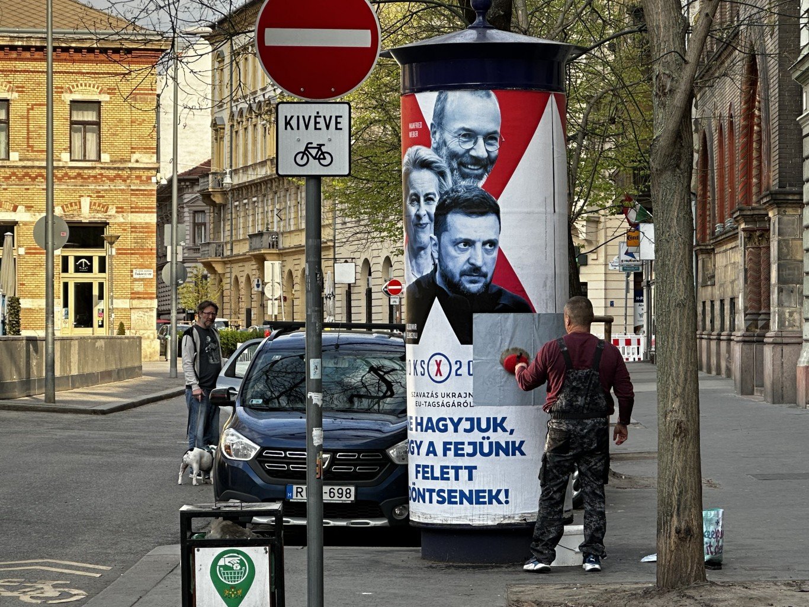
✓ Sajtófotó vágva és csatolvaVizuális leírás: Szigorúan néző Volodimir Zelenszkij, mosolygó Ursula von der Leyen és nevető Manfred Weber portréja kék kormányzati háttér előtt.
Fotó: 444.hu
Helyszín: Budapest / Országos
Cikk megnyitása ↗
HUN_PLAKAT_2025_0022025-07-01
Magyarország Kormánya (Miniszterelnöki Kabinetiroda)
Állami hirdetés (VOKS 2025 utókampány)
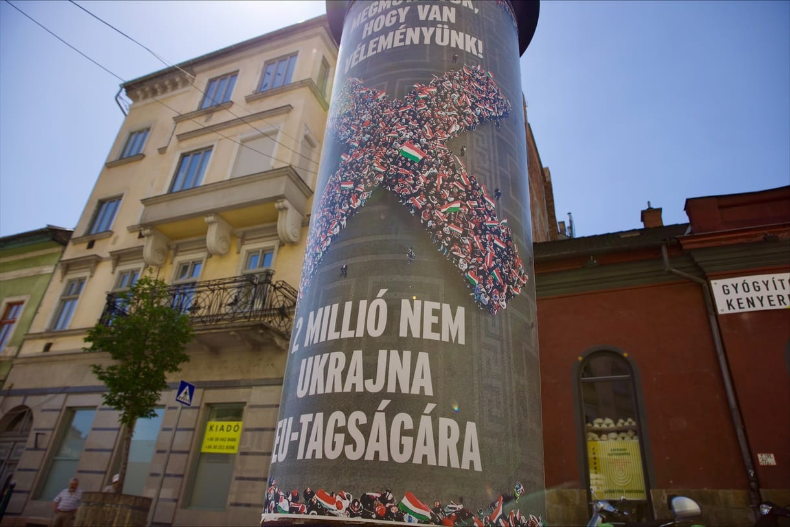
✓ Sajtófotó vágva és csatolvaVizuális leírás: Tömegjelenetet ábrázoló háttér előtt nagy fehér és nemzeti színű tipográfiával szedett kormányzati üzenet.
Fotó: Cabrera Martin / HVG
Helyszín: Budapest
Cikk megnyitása ↗
HUN_PLAKAT_2025_0032025-07-02
Nemzeti Ellenállás Mozgalom (Ellenállás Mozgalom Non-Profit Kft. – Apáti Bence)
Harmadik feles negatív politikai kampány
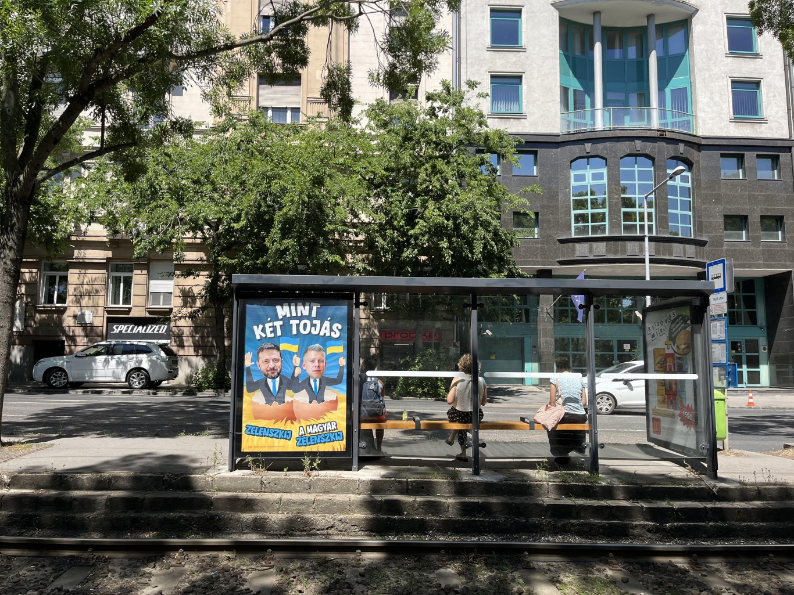
✓ Sajtófotó vágva és csatolvaVizuális leírás: Két tojáshéjban ülő, ukrán zászlót lengető Volodimir Zelenszkij és Magyar Péter montázsa; bal alul: Kiadja a Nemzeti Ellenállás Mozgalom Non-Profit Kft.
Fotó: Mészáros Juli / 444.hu
Helyszín: Budapest
Cikk megnyitása ↗
HUN_PLAKAT_2025_0042025-07-12
Kormánypárti kampányfelület
Mobil teherautós ellenkampány
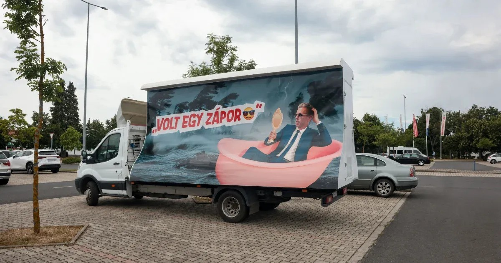
✓ Sajtófotó vágva és csatolvaVizuális leírás: A Tisza Párt nagykanizsai kongresszusának helyszínén leparkolt teherautóra szerelt, Magyar Pétert gúnyoló plakát.
Fotó: Telex
Helyszín: Nagykanizsa
Cikk megnyitása ↗
HUN_PLAKAT_2025_0052025-10-04
Magyarország Kormánya (Miniszterelnöki Kabinetiroda)
Állami hirdetés (Nemzeti Konzultáció 2025 ősz)
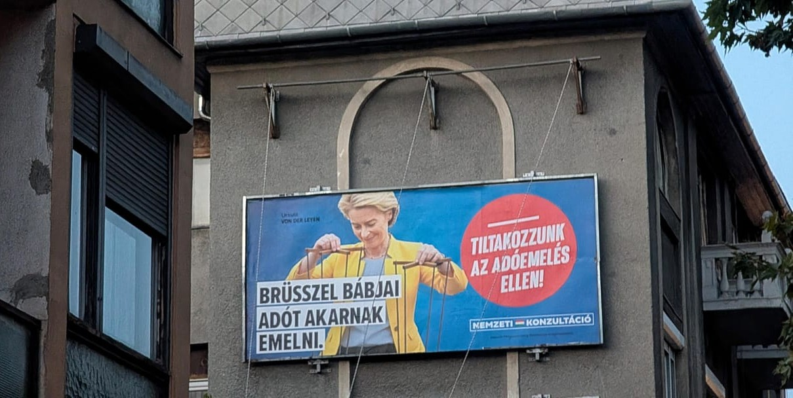
✓ Sajtófotó vágva és csatolvaVizuális leírás: Bábozó kézmozdulatot tevő Ursula von der Leyen sötétkék háttér előtt.
Fotó: Túry Gergely / HVG
Helyszín: Budapest
Cikk megnyitása ↗
HUN_PLAKAT_2025_0062025-10-04
Magyarország Kormánya (Miniszterelnöki Kabinetiroda)
Állami hirdetés (Családi adócsökkentés)
 ✓ Sajtófotó vágva és csatolva
✓ Sajtófotó vágva és csatolvaVizuális leírás: Mosolygó család közös étkezés közben, világos fotón.
Fotó: Túry Gergely / HVG
Helyszín: Budapest
Cikk megnyitása ↗
HUN_PLAKAT_2025_0072025-12-04
Hegyvidéki Fidesz-kampány (XII. kerület)
Helyi egyéni választókerületi figyelemfelkeltő (teaser) plakát
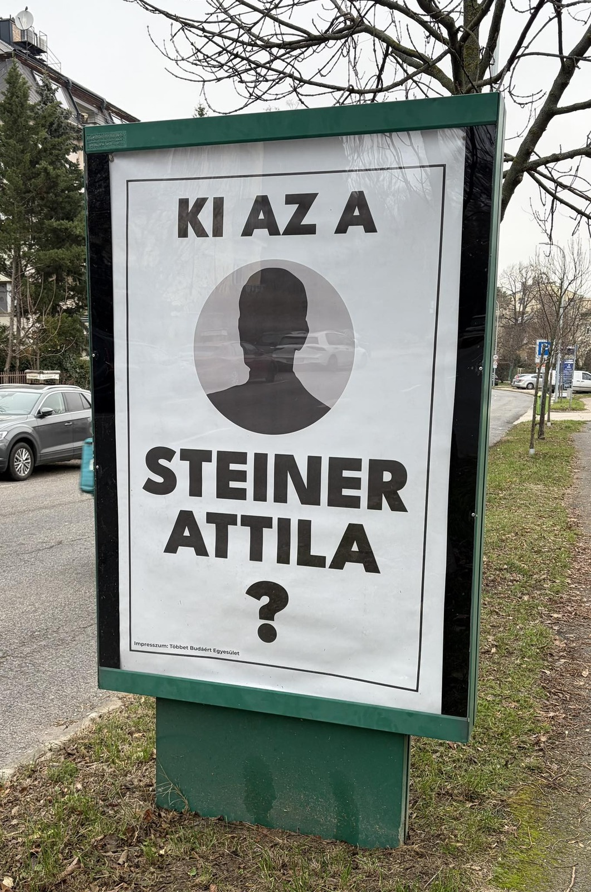
✓ Sajtófotó vágva és csatolvaVizuális leírás: Fekete-fehér stílusú, férfi sziluettet ábrázoló figyelemfelkeltő plakát a XII. kerületben.
Fotó: Kovács Gergely (Kutyapárt) / Facebook (444.hu)
Helyszín: Budapest, XII. kerület
Cikk megnyitása ↗
HUN_PLAKAT_2026_0082026-02-04
Magyarország Kormánya (Miniszterelnöki Kabinetiroda)
Állami hirdetés (Nemzeti Petíció 2026)
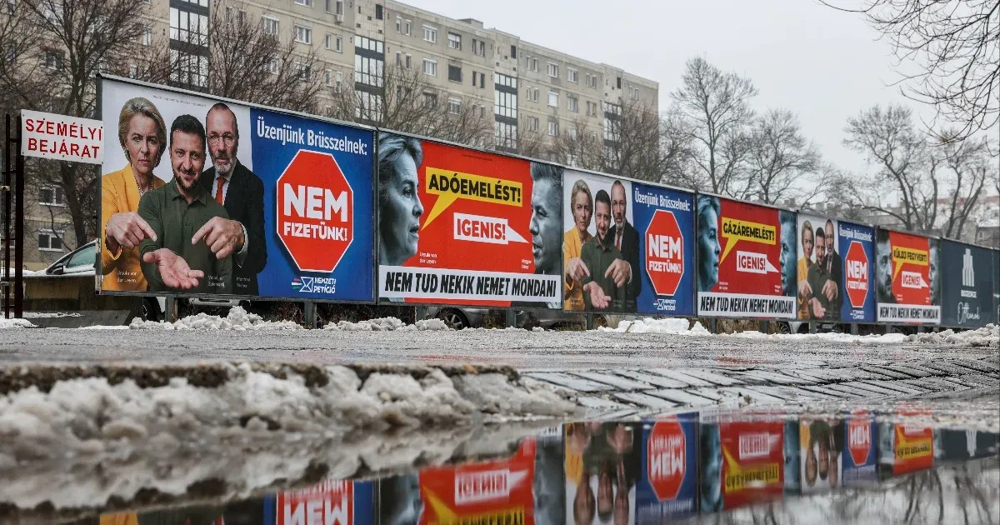
✓ Sajtófotó vágva és csatolvaVizuális leírás: Bal oldalon Volodimir Zelenszkij nyújtott tenyérrel, Ursula von der Leyen és Manfred Weber; jobb oldalon piros körben NEM FIZETÜNK! felirat.
Fotó: Huszti István / Telex
Helyszín: Budapest / Pécs / Országos
Cikk megnyitása ↗
HUN_PLAKAT_2026_0092026-02-04
Nemzeti Ellenállás Mozgalom (Ellenállás Mozgalom Non-Profit Kft. – Apáti Bence)
Harmadik feles negatív politikai kampány (3 részes sorozat)
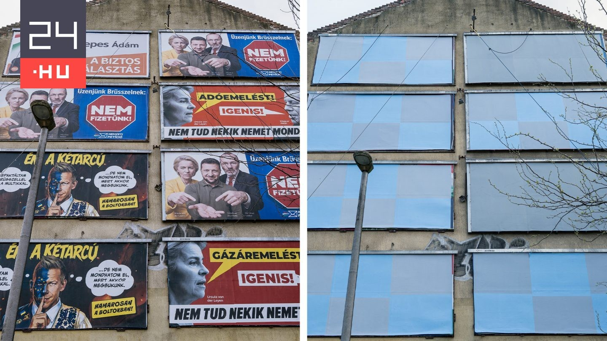
✓ Sajtófotó vágva és csatolvaVizuális leírás: Piros szövegbuborékban parancsoló Ursula von der Leyen / Zelenszkij, előttük meghajolva IGENIS! felirattal válaszoló Magyar Péter.
Fotó: Kőrös Gábor / 24.hu
Helyszín: Budapest, III. kerület Kaszásdűlő (Szentendrei út)
Cikk megnyitása ↗
HUN_PLAKAT_2026_0102026-02-24
Fidesz – Magyar Polgári Szövetség – KDNP
Hivatalos párt- és egyéni jelölti választási plakát
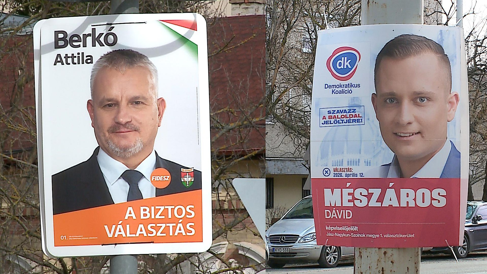
✓ Sajtófotó vágva és csatolvaVizuális leírás: Fehér és narancssárga arculat, a jelölt portréja, felül Fidesz-KDNP logó, alul narancssárga sávban fehér nagybetűkkel: A BIZTOS VÁLASZTÁS.
Fotó: Szolnok TV
Helyszín: Szolnok / Kecskemét / Országos
Cikk megnyitása ↗
HUN_PLAKAT_2026_0112026-04-08
Magyarország Kormánya (Miniszterelnöki Kabinetiroda)
Állami hirdetés (Kampányhajrá gazdasági kampány)
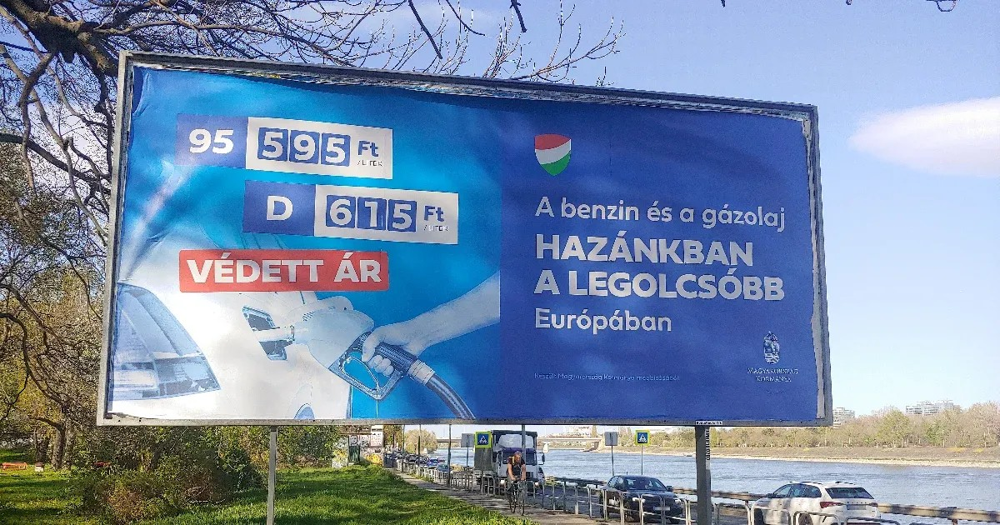
✓ Sajtófotó vágva és csatolvaVizuális leírás: Kormányzati kék arculati hátteren üzemanyag-pisztoly és a védett ár eredményeit hirdető felirat.
Fotó: Zách Dániel / Telex
Helyszín: Budapest / Országos
Cikk megnyitása ↗
HUN_PLAKAT_2026_0122026-02-25
TISZA – Tisztelet és Szabadság Párt
Hivatalos egyéni képviselőjelölti választási plakát
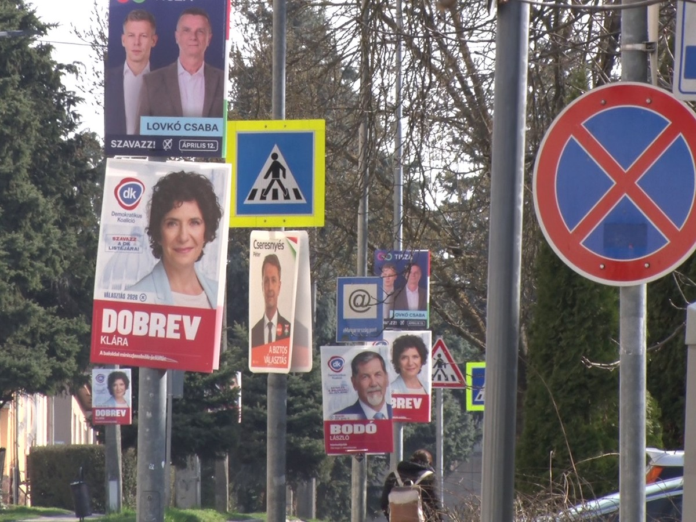
✓ Sajtófotó vágva és csatolvaVizuális leírás: Kék-fehér-piros-zöld TISZA arculat, a helyi egyéni jelölt portréja, nagy piros mezőben fehér betűkkel a jelölt vezetékneve (pl. MÉSZÁROS), felette TISZA logó.
Fotó: Kanizsa Médiaház / Szolnok TV
Helyszín: Szolnok / Nagykanizsa / Országos
Cikk megnyitása ↗
HUN_PLAKAT_2026_0132026-03-01
TISZA – Tisztelet és Szabadság Párt (Szimpatizánsok otthonai)
Lakossági erkély-, ablak- és kerítéskampány (Molinó és plakát)
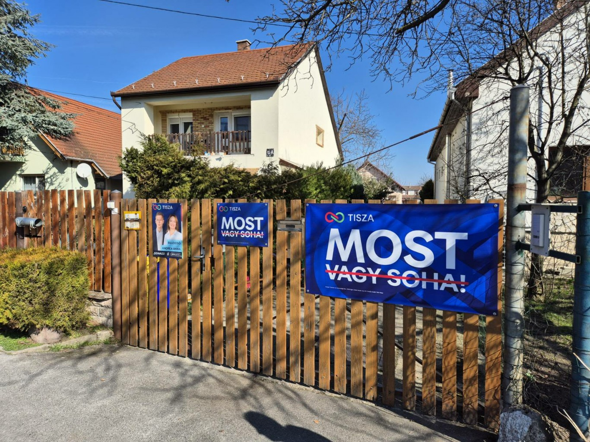
✓ Sajtófotó vágva és csatolvaVizuális leírás: Magánházak kerítésére, társasházi erkélyekre és ablakokba kihelyezett 'Most vagy soha!' feliratú és jelölti fotós TISZA-plakátok.
Fotó: Bábel Vilmos / 444.hu, Lakos Gábor / HVG
Helyszín: Országos (lakossági erkélyek, kerítések)
Cikk megnyitása ↗